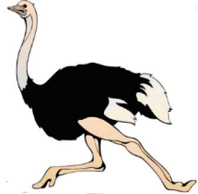
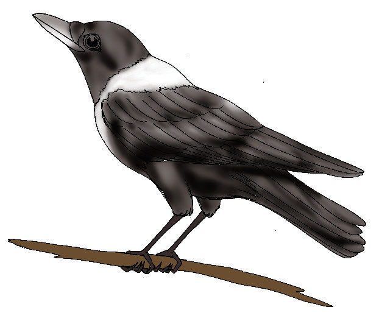

Mbuni yeye aliingia kwa madaha. Alijieleza kuwa yeye ni ndege mkubwa mbugani. Hivyo, hawezi kuruka juu sana ila ana uwezo wa kukimbia sana. Mbuni hutaga mayai makubwa sana.

Siku ile ndege wote walikuwa na furaha. Kila ndege alikuwa akionesha mikogo kwa kuyapigapiga mabawa yake. Kunguru, Chiriku na Bundi walikuwa wa mwisho kujieleza. Kunguru aliringa kwa rangi yake nyeusi. Kunguru alieleza kuwa baadhi yao wana doa moja jeupe shingoni. Wao hula vyakula mbalimbali.
